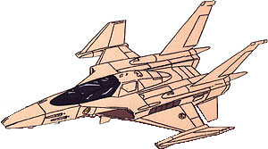

| FF-6 Tin Cod |
|
|  | |
General and Technical Data |
|
|
Model Number: FF-6 Unit type: atmospheric interceptor Armament: 4 x 25mm machinegun; 2 x hardpoints, mounts missiles, bombs or fuel cells |
|
| Technical and Historical Notes | |
|
Developed as a part of the 60's Rearmament Program, the FF-6 Tin Cod is a modern replacement for the F-22 Raptor that had been in service to the Earth Federation for nearly a century.
The Tin Cod is a smaller, faster, lighter, and cheaper aircraft than most of the twentieth-century designs in use by the Earth Federation up until that point. As such, it was easily mass-producable by the Federation's sturdy industrial plants, and virtually every base across the Earth was usually equipped with at least a squadron of Tin Cods. The Tin Cod's primary armament is a pair of AMRAAM air-to-air missiles for hitting enemy aircraft quickly and efficiently. Of course, the standard four nose-mounted 25mm machineguns were maintained, though it was more by tradition at this point than anything else. Following the invasion of Earth by the Zeon in March, Tin Cod squadrons kept in mind the horrendous failures of the FF-S3 Saberfish during the Lourm Campaign. Rather than blantantly attack Zeon mobile suits, as had been done in space, Tin Cods would usually try to lure Zeon's ever-present Zakus into ambushes where the Type 61 Main Battle Tanks could effectively engage the much more mobile Zeon units. Following the deployment of thier own mobile suits, the Earth Federation is relying less on the Tin Cod to act as a primary attack unit and more as a platform for high-speed hit-and-run strikes against enemy targets. |
 RPG quick stats sheet
RPG quick stats sheet